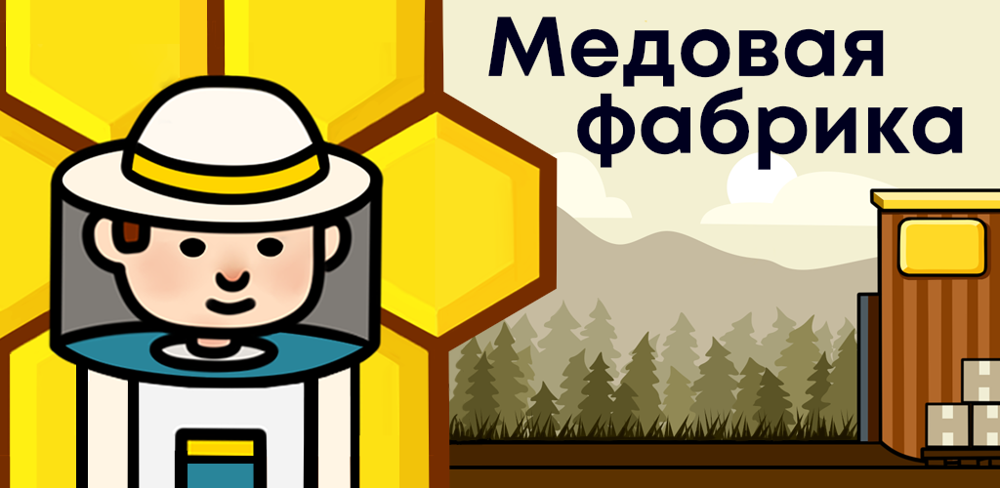

Honey factory


У тебя есть завод мёда, или гигантская пчелиная фабрика, которой нужна прокачка, а ты - ленивый пчеловод. Кликай, чтобы добывать мёд и развивать фабрику пчёл: улучшай инфраструктуру, нанимай работников, увеличивай производство мёда и становись богатым магнатом!
Развивать завод мёда легко: клик - и бизнес игра началась! В ульях на фабрике мёда трудятся пчелы. Добывая мёд, ты зарабатываешь деньги, которые нужны для прокачки пчелиной фермы и открытия новых этажей. Начни собирать мёд вручную, а потом автоматизируй добычу ресурса. Нанимая пчеловодов и других профи, которые делают все за тебя, ты освобождаешься от нужды собирать мёд из ульев лично. Пчелиная ферма начинает работать как конвейер.
На фабрике мёда тебя ждут:
- Более 500 уровней прокачки;
- Более 10 этажей с ульями;
- Эволюция этажей для повышенной добычи ресурса (по принципу "от маленького до большого")
- Бонусы после каждого этажа;
- Автоматическая сборка мёда.
Эта ферма мёда для тебя, если ты:
- пчеловод, любишь пчел или игры симуляторы про пчеловодство;
- любишь заводы и фабрики;
- хочешь ощутить себя промышленным магнатом, не вставая с дивана;
-любишь кликеры или просто залипательные игры тайконы.
Наша игра фабрика пчёл - это, в какой-то мере, бизнес-игра симулятор, которая устроена как и кликер игра. Ты решаешь, на что и когда тратить ресурсы. Но при этом, как настоящий ленивый магнат, ты не заморачиваешься. Tycoon игры тем и хороши, что решения здесь занимают доли секунды. А интуитивный дизайн подсказывает, как развиваться в игре.
Клик симулятор дает возможность стать магнатом в короткие сроки. Построй свою автоматизированную фабрику мёда, с каждым кликом выводи производство на новый уровень. Начни с одного улья, а дальше, как в бизнесе: делай больше и получай больше. Несколько кликов - и ты богач!
Что может быть увлекательнее, чем развивать свой собственный завод?
Играй в пчелиную ферму-кликер где и когда удобно:
-Скачай и играй без интернета;
-без навязчивых звуков;
-прогресс сохраняется;
-Навыки пчеловодства не требуются.